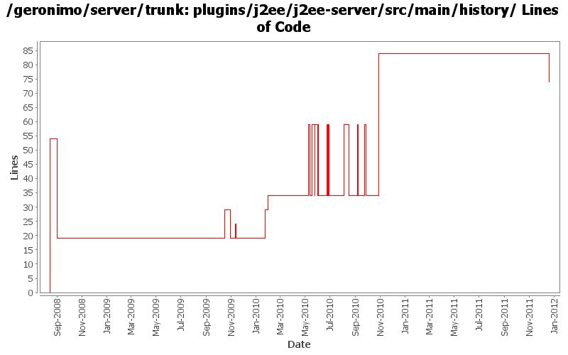

[root]/plugins/j2ee/j2ee-server/src/main/history

| Author | Changes | Lines of Code | Lines per Change |
|---|---|---|---|
| Totals | 34 (100.0%) | 382 (100.0%) | 11.2 |
| djencks | 16 (47.1%) | 309 (80.9%) | 19.3 |
| rickmcguire | 12 (35.3%) | 65 (17.0%) | 5.4 |
| gawor | 2 (5.9%) | 5 (1.3%) | 2.5 |
| xuhaihong | 3 (8.8%) | 2 (0.5%) | 0.6 |
| dwoods | 1 (2.9%) | 1 (0.3%) | 1.0 |
GERONIMO-6240 Fix build up to system-database. Builder not found for it
4 lines of code changed in 1 file:
use the new servicemix javassist bundle
5 lines of code changed in 1 file:
fix build error caused by javassist version problem
5 lines of code changed in 1 file:
switch to released version of activemq
50 lines of code changed in 1 file:
More osgi work on the axis plugins
0 lines of code changed in 1 file:
GERONIMO-5624 patch (slightly modified) from Ivan to use info tree to merge security info from dynamic additions and annotations (this is new for jetty).
25 lines of code changed in 1 file:
restore default environment to the BValNamingBuilder, remove extraneous setAttribute() for PersistenceUnitGBean
0 lines of code changed in 1 file:
GERONIMO-5567 rewrite jetty integration to use a openejb-like info tree and the *Registration interfaces. This gets everything started in the right order and is a lot simpler. Old code still needs to be removed
25 lines of code changed in 1 file:
fix build break
0 lines of code changed in 1 file:
GERONIMO-5066 Fix a lot of problems with jndi including wrong finders and inconsistent adding of injections
25 lines of code changed in 1 file:
Dependency updates
0 lines of code changed in 1 file:
cf openejb rev 958340. marshal persistence.xml in the correct namespace, marshal methods names changed
25 lines of code changed in 1 file:
upgrade dependencies to newer verions
0 lines of code changed in 1 file:
GERONIMO-5190 use openejb-jee jaxb tree for spec dds
25 lines of code changed in 1 file:
remove unneeded backport-util dependency
0 lines of code changed in 1 file:
GERONIMO-5025, GERONIMO-5117. Make jndi supported directly by Modules and straighten out which contexts are shared when.
25 lines of code changed in 1 file:
merge in header file changes from M1
0 lines of code changed in 1 file:
GERONIMO-5177 introduce sub-modules to allow deploying ejbs, rars, etc as parts of wars, ejbs, clients, etc. First draft
25 lines of code changed in 1 file:
a. remove the use of configurationUrl \n b. Add a BundleAwareReference interface
1 lines of code changed in 1 file:
GERONIMO-5025 support for jndi configuration in application.xml (part 2)
25 lines of code changed in 1 file:
Add a wrapper GBean for SystemLog
1 lines of code changed in 1 file:
Use servicemix bundlized Quartz
0 lines of code changed in 1 file:
GERONIMO-5290 fix many of the deprecation warnings from maven 3
25 lines of code changed in 1 file:
add howl bundle to j2ee plugin so that geronimo-transaction is wired correctly. fixes the howl class load problems on startup
5 lines of code changed in 1 file:
GERONIMO-4996 GERONIMO-5025 separate jndi context setup from web app context since jsf needs it too. Hook up myfaces which now starts. Don't know if myfaces works
10 lines of code changed in 1 file:
explicitly version spec packages from the runtime jre and restore provided status of geronimo-gbean-deployer
0 lines of code changed in 1 file:
more xbeans cleanup for the tomcat plugin
5 lines of code changed in 1 file:
regenerate dependencies for a couple of plugins
0 lines of code changed in 1 file:
geronimo-j2ee-builder and geronimo-naming-builder compile. There seem to be packaging problems in geronimo-j2ee
10 lines of code changed in 1 file:
update other XML files with embedded versions from 2.2-SNAPSHOT to 3.0-SNAPSHOT
1 lines of code changed in 1 file:
GERONIMO-4692 sort dependencies.xml, except for connector-1_6
5 lines of code changed in 1 file:
GERONIMO-4258 move geronimo-j2ee into plugins/j2ee
1 lines of code changed in 1 file:
GERONIMO-4239, sort of. Use transitive depenedencies in c-m-p everywhere. This may break stuff.... let me know
0 lines of code changed in 1 file:
GERONIMO-4248 Add dependency history files
54 lines of code changed in 1 file: